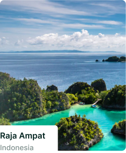

Пять душевных мест для занятия йогой
За последний год занятия йогой помогли многим обрести покой и умиротворение. Теперь, когда туризм снова набирает обороты, мы обнаружили, что каждый четвертый путешественник в своей следующей поездке будет уделять первоочередное внимание ралаксации . Если вы одни из многих, кто испытывает страсть к путешествиям и хочет привести в гармонию разум и тело, познакомьтесь с нашей подборкой лучших мест в мире для оздоровительной йоги.
COMO Shambhala Estate, Бали, Индонезия
- Спорт и фитнес
- Еда и напитки
если у вас на уме поддержание ясного ума, в Shambhala Estate вам предложат полный комплекс
холистических
оздоровительных процедур, включая медитацию, пилатес, йогу, гидротерапию и не только. Предпочитаете
более
персонализированный подход? Профессиональные инструкторы отеля, аккредитованные на международном уровне, с
удовольствием разработают
для вас индивидуальный план оздоровления
Отель Tri расположен на берегу тихого озера Коггала (https://www.booking.com/city/lk/koggala.ru.html)и окружен со всех сторон благоухающими плантациями корицы. Стены курортного отеля, сделанные из дерева с близлежащих плантаций, сливаются с окружающей природой. Лишь вид соломенной крыши или блестящая вода одного из пейзажных бассейнов иногда выдают его расположение.
Этот курортный отель является детищем Роба Драммонда, который уделяет большое внимание устойчивому развитию. Природа проникает здесь в каждый уголок. Повсюду можно увидеть безобидных гекконов, а если подойти к бассейну, то можно заметить зимородков.